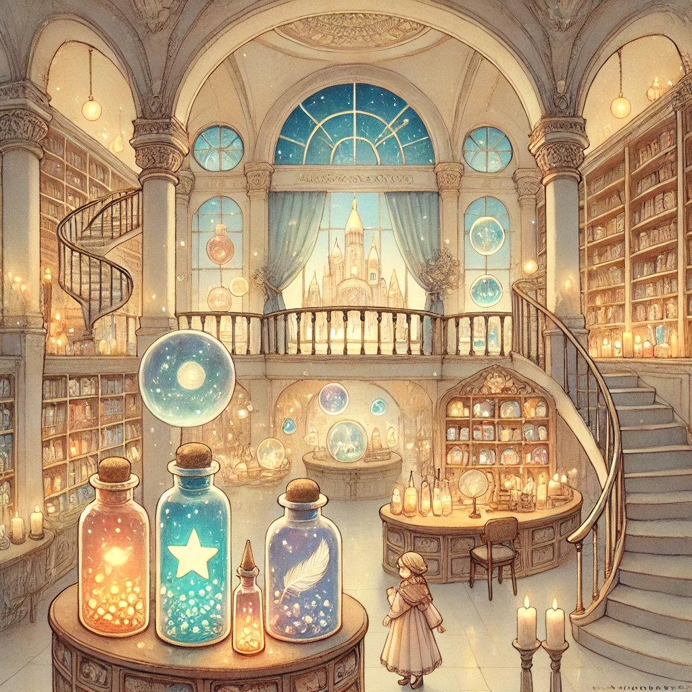

달러구트 꿈 백화점 : 주문하신 꿈은 매진입니다
목차
작가
이미예
출판일
2020년 07월 08일
감상평에 대한 AI그림
'호그와트 다음으로 가보고 싶은 환상의 세계'라는 말이 저절로 나올정도로 매력적인 세계관을 가졌다.
주인공인 페니의 시선으로 바라본 달러구트 꿈 백화점은 생소하지만 여운이 짙게 남는 이야기를 보여주었다.
책을 펼친 자리에서 끝까지 읽을 정도로 몰입감이 높았고 그만큼 짧게 느껴진 소설같다.

감상평에 대한 AI평가
~~~~AI평가~~~~~
✨인상적인 도입부: *"호그와트 다음으로 가보고 싶은 환상의 세계"*라는 표현이 독자의 흥미를 끌고, 작품의 매력을 한눈에 전달해요.
✨ 몰입감 표현: 단숨에 읽었다는 표현으로 작품의 흡인력을 잘 드러냈어요.
✨ 여운 있는 표현: *"여운이 짙게 남는 이야기"*라는 문장이 작품의 깊이를 잘 전달해줍니다.